Examine
Next,we're going to move onto examining the data recorded. Prioritize what your performance costs are. Is it your JavaScript? Is it your rendering?We’re going to first look at the Timeline Events mode, which can help answer these questions.

In this mode, the Summary view (at the top of the Timeline) displays horizontal bars representing the network and HTML parsing (blue), JavaScript (yellow), style recalculation and layout (purple) and painting and compositing(green) events for your page. Repaints are browser events invoked by responses to visual changes such as window resizes or scrolls.
Recalculations occur due to modifications of CSS properties whilst Layout events (or reflows) are due to changes in element position. Don't worry if you can't remember these as the legend lower down in the Timeline panel covers these.

Below the Summary view is the Details view, which includes detailed records for these categories after a session has been recorded.
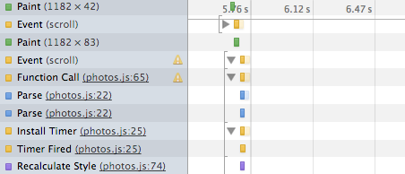
Each record has a title describing it to the left and timeline bars to the right. Hovering over a record will display an extended tooltip with details about the time taken to complete it – these have so much useful information in there, so do pay attention to them, especially the Call Stack.
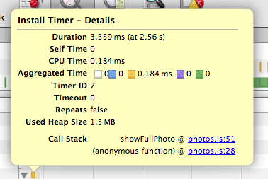
Clicking on Call Stack or location hyperlinks within these tooltips will take you to the exact line of JavaScript responsible for the behaviour. If you find that a browser event takes an excessive amount of time to complete (which you can determine from the ‘Duration’ in the details tooltip), you may want to investigate further as to why this is.
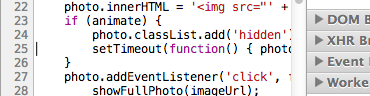
Back to records, whilst clicking on a record expands it, providing further records about the events it was composed of.
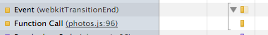
If you’re only interested in a specific section of data, click and drag within the Summary view to select a range to zoom into.
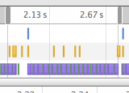
Improving frame rate, animations and responsiveness
Frames modegives you insight into the tasks Chrome had to perform to generate a single frame (update) of your application for presentation on the screen.
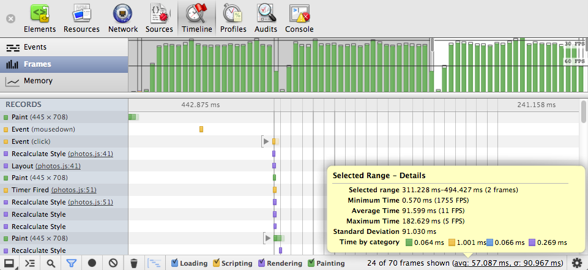
For a really smooth experience, you want some consistency with the frame rate you’re achieving – ideally want to be hitting 30-60fps and if you’re hitting much lower than this then your application is going to appear janky or jittery as frames are being missed.
InFrame mode, the shaded vertical bars correspond to recalculating styles, compositing and so on. The transparent areas of each vertical bar correspond to idle time, at least, idle on the part of your page. For example, say your first frame takes 15ms to execute and the next takes 30ms. A common situation is that frames are synchronized to refresh rate and in this case, the second frame took slightly longer than 15ms to render. Here, frame 3 missed the "true" hardware frame and was rendered upon the next frame, hence, the length of the second frame was effectively doubled.
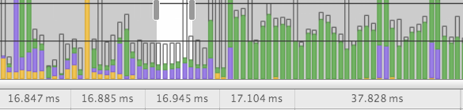
As Andrey Kosyakov mention on the Chromiumblog, even if your app doesn't have a lot of animation in it, the idea of frames is useful as the browser has to perform a repeated sequence of actions while processing input events. When you leave enough time to process such events in a frame, it makes your app more responsive, meaning a better user experience.
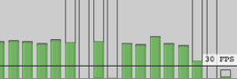
When we target 60fps, we have a max of 16.66msto do everything. That's not a lot of time and so squeezing as much performance out of your animations as possible is important.
Again,by zooming into frames that aren’t hitting your target frame rate in the Summary view, you can discover what browser (and application behaviour) is causing you pain.
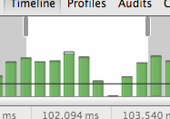
For example, we recently used Frames (and Events) view to discover that in one of our apps there were an excessive number of image decodes occurring because the browser was constantly having to rescale our images on the fly.
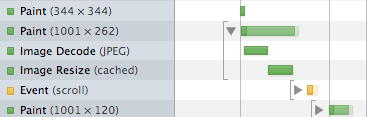
By instead using prescaled images of the dimensions we actually needed, we avoided this overhead and managed to hit 60fps, which was a lot more smooth for the end-user.
Related tip: You can enable a real-time FPS counter from within the DevTools by going to the Settings menu and enabling Show FPS meter.
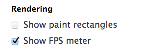
This will display a meter as follows in the top right corner of your application, meaning you can get a visual feedback loop on when your frame rate is dropping below your desired target rates.
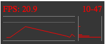
Mobile
Note that on mobile, as Paul demonstratedin the Breakpoint Ep 4, animations and frame rate are very different than on desktop by several orders of magnitude. Achieving a higher frame-rate is difficult there and tools like the Timeline Frame mode (coupled with remote debugging) can help you diagnose what your bottlenecks are.
Long-paints are difficult
Diagnosing paints that take a while can be another challenge. If you find yourself wanting to know why the paint for a specific element is slow, set parts of the DOM to display:none to remove it from Layout/Reflow and visibility:hiddento remove from Paint. You can then measure it by taking a Timeline recording and noting paint times, then viewing the (experimental) paint rate in Force Repaint Mode (thanks to Paul for that tip!).
Decreasing memory use and avoiding the sawtooth curve
Memory mode is useful for diagnosing the initial symptoms that your app might be suffering from a memory leak.
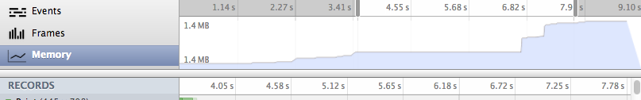
To use it, record once more some of your interactions with the application for a few minutes then stop and examine. What you’ll notice in the Summary view is the memory usage for those actions as you moved between different parts of the app. There will be both usage increase as well as normal garbage collection occurring.
The area in light bluerepresents the amount of memory used by your application at a given time whilst the white area is the total amount of memory that has been allocated.
If you notice a sawtooth graph in the Summary view, this represents the cost of business. For example, an empty requestAnimationFramewill give you garbage, however it’s the steepness of your sawtooth that you need to keep an eye on. If it’s getting really sharp, you’re generating a great deal of garbage.
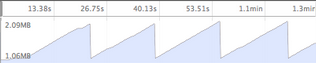
You can further test this in a new recording session by interacting with your app, idling for a few minutes and then stopping and examining once again. V8 runs a round of garbage collection when your application is idle(or if you’re just generating a lot of garbage). If it looks like the memory never really went down after your idle time, you’re creating a lot of garbage.
A few cycles through garbage collection and ideally your memory profile should be flat. If it’s constantly going up in between GC cycles (and you see say, a step-function), then you may have a memory leak.
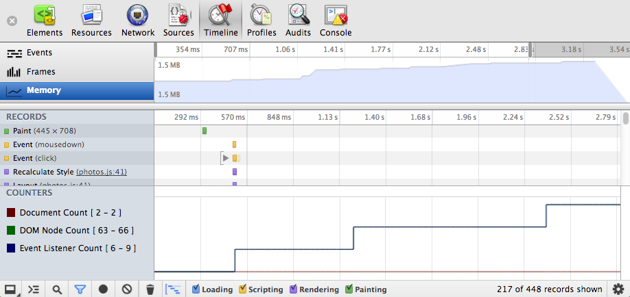
To the left of the Details view in Memory mode, you’ll notice three options: Document count, DOM node count and Event listener count.
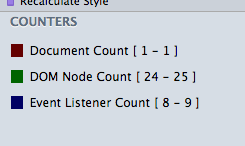
The DOM node countgraph shows the number of created DOM nodes still being held in memory (i.e which have yet to be garbage collected), whilst the other two options display the same for your event listeners and documents/iframeinstances. Should you wish to only view counts for a particular counter type, you can deselect the others to hide them from the Details view.
We now know that there may be potential leaks, but we need to locate their origin. This is where we can use another feature called the Heap Profiler, found under the Profiles panel.